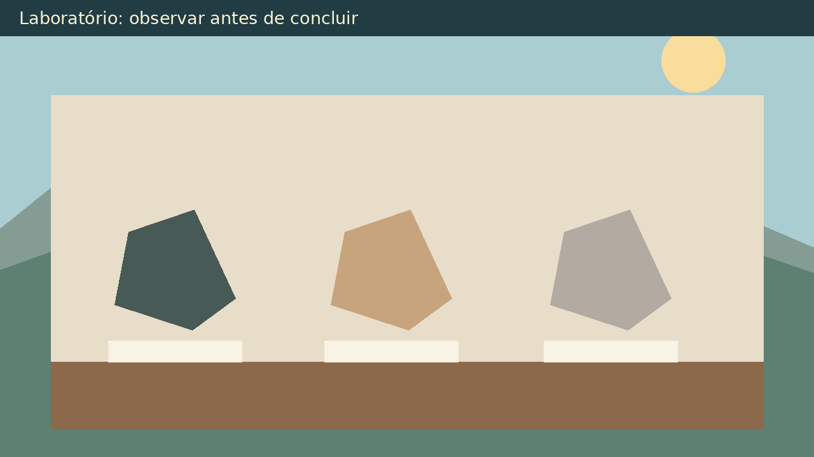

Observe antes de nomear
As amostras desta cena são ilustrações esquemáticas. Para classificar uma rocha real, observe grãos, textura e outras pistas e procure informações sobre a formação.

Observe antes de nomearUma pista não conta tudoIr para VulcãoResolver as investigaçõesApoio de leitura diretoUma rocha é um material natural formado por minerais ou outros constituintes geológicos. A cor, os grãos, as camadas e a textura dão pistas, mas a cor sozinha não revela como uma rocha se formou. Para classificá-la, precisamos relacionar as pistas à sua origem. Uma pedra de calçada é um pedaço de rocha; não é um quarto grupo de formação. Uma conclusão científica relaciona observação e explicação. Grãos de areia unidos, junto a informações de formação, sustentam uma interpretação sedimentar. Uma cor escura, sozinha, não prova que uma rocha seja basalto. Para registrar uma amostra, diga o que observou, qual processo explica as pistas e o que ainda precisa ser confirmado. No ambiente virtual, as amostras são modelos didáticos, não exames de rochas reais.
As amostras desta cena são ilustrações esquemáticas. Para classificar uma rocha real, observe grãos, textura e outras pistas e procure informações sobre a formação.
Somente a cor não basta para classificar. Uma marca precisa ser investigada antes de ser chamada de fóssil. Diga também o que você ainda não sabe.
Selecione para avançar à próxima cena.
Abrir cena →Use as evidências das cenas no percurso principal ou em Aprender de outro jeito. O resultado fica no percurso de atividades, separado desta exploração.
Abrir percurso →Acesso direto ao apoio com imagens, áudio, letras, palavras e frases. Não é preciso caminhar nem controlar um personagem.
Abrir percurso →Imagem: Ilustração didática autoral da produção pedagógica do Prof. André · CC BY 4.0 · illustration